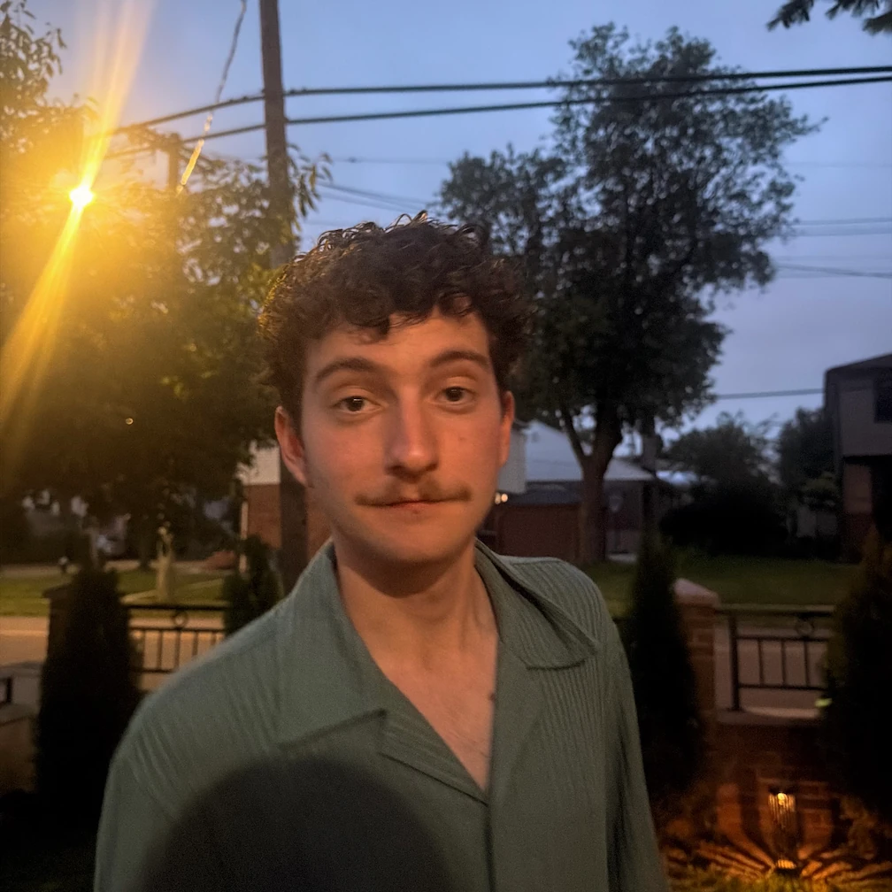
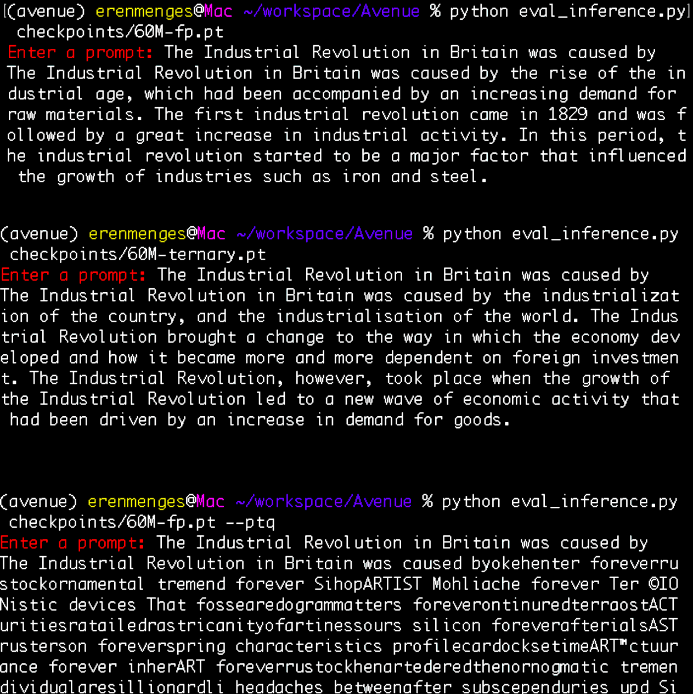
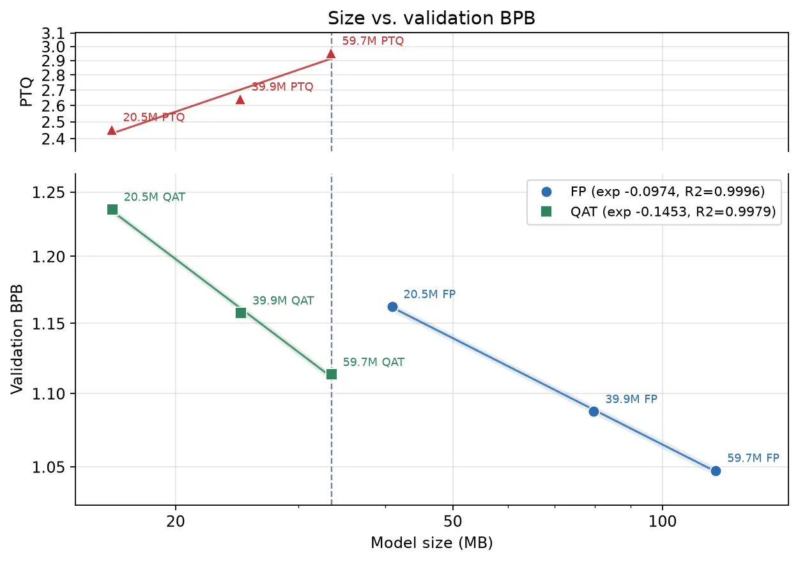
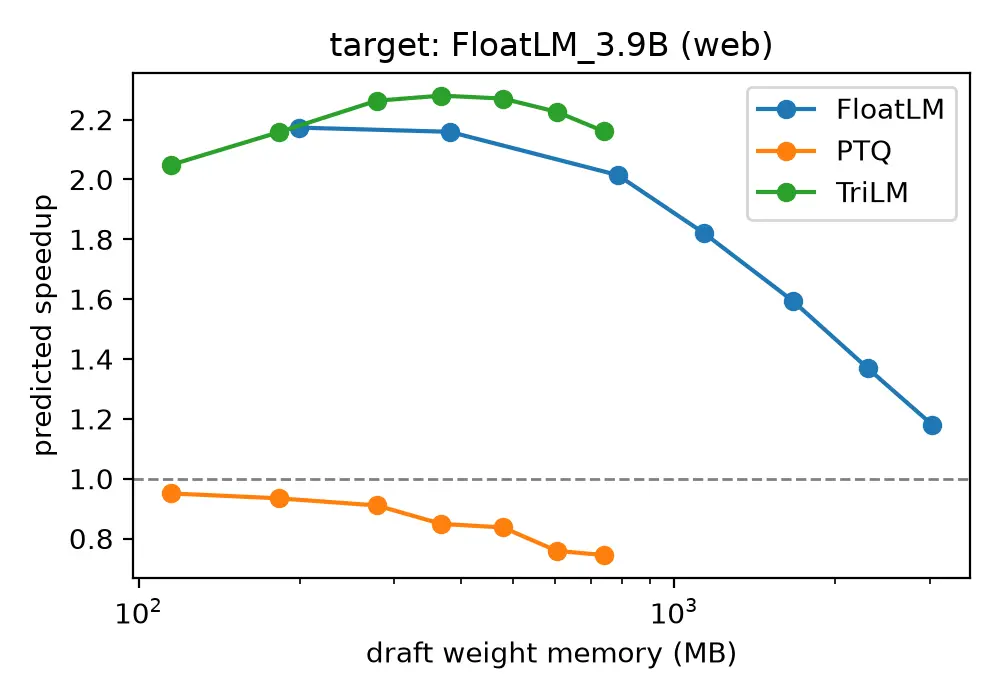
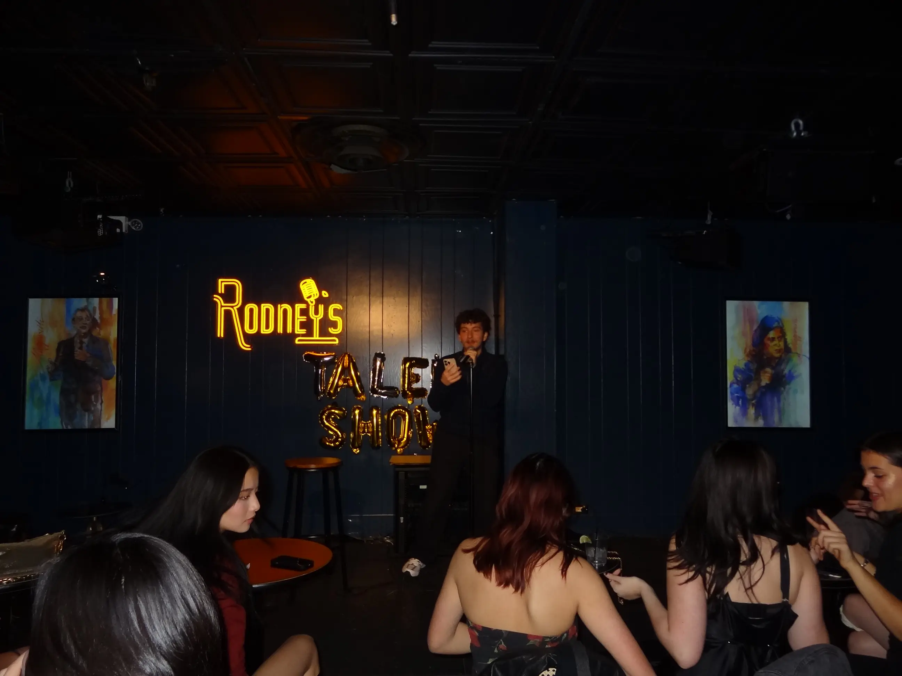
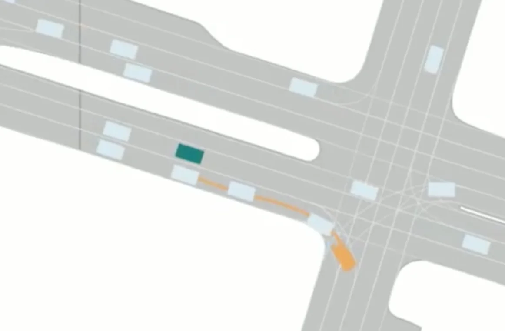
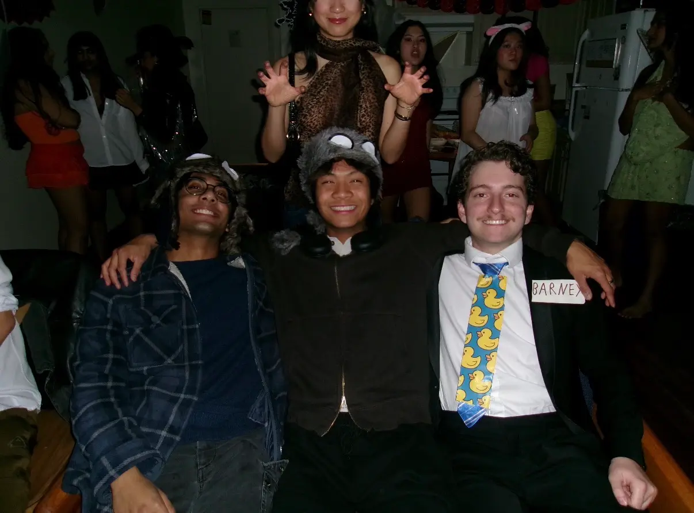
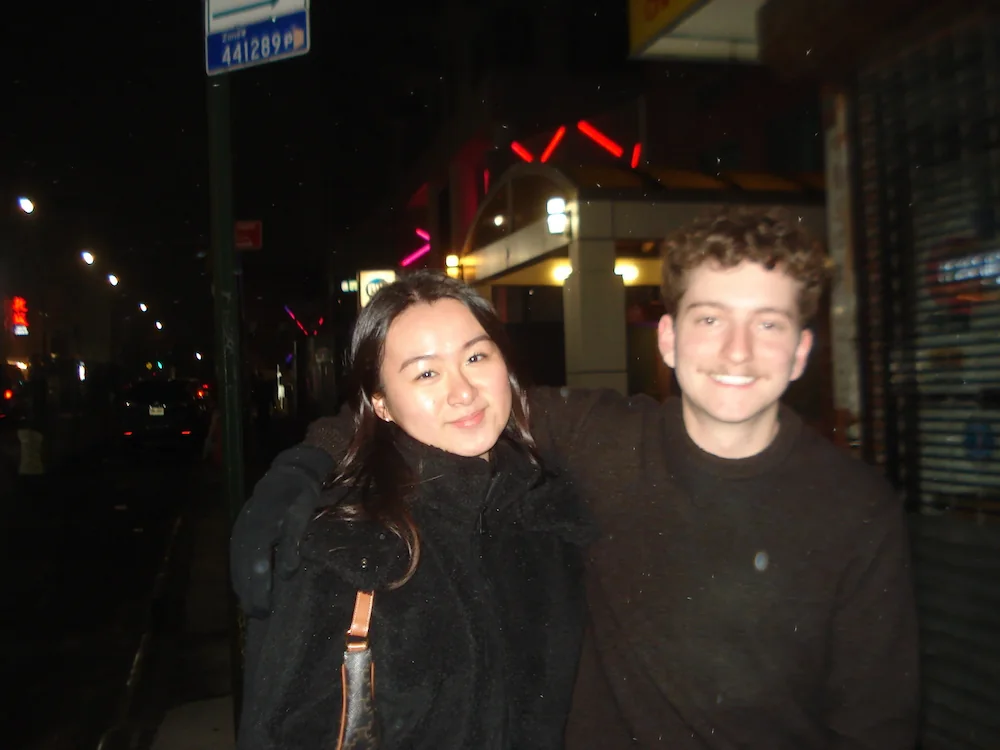

Hi! I'm Eren. I'm a 20 year old junior at NYU majoring in CS. I like singing, hiking, humbling business majors, and being mom's most handsome son.
I also like being able to train and run LLMs on devices I own. This summer I might have overdone that:
Looking for a Summer 2027 research/ML engineering internship. My grandma says I'd be good at it. She also says I'm handsome. Two for two.
Contact me at eren.menges@nyu.edu. Here's my resume and GitHub.
Take a look around. No flashy animations. Loads under 0.2s.
I trained six language models (20M/40M/60M, each in BF16 and ternary), from scratch on a MacBook Pro in 43 hours. I wrote a custom Transformer with RoPE and RMSNorm, a Muon+AdamW training pipeline, and a custom inference stack with sampling. I also used my own BPE tokenizer, trained on the corpus. The models are called Avenue A, B, and C, named after the avenues of East Village (the neighborhood I live in).
Every line written by me, a human. I can tell you what each function does by heart.

The result: at equal memory, ternary wins. A 33 MB ternary model beats a 41 MB BF16 model on validation bits per byte (BPB). Also, a ternary model needs ~1.9× the parameters to match BF16, but at 2 bits a weight the memory footprint still comes out smaller. Quantizing to ternary after training is absolutely horrible. Don't do it.

It's interesting to see a 60M ternary model be smaller and perform better than a 20M BF16 model. Model sizes were computed at 2 bits per ternary weight; HuggingFace checkpoints are full training checkpoints, saved at the end of training. They include the FP32 weights and optimizer state.
I also couldn't find an explanation of how ternary training works that didn't fry my brain, so I wrote one.
Speculative decoding: a small draft model guesses tokens in a few cheap consecutive forward passes, a big target model checks them all in one forward pass. If the guessed tokens are accurate, the big model gets those extra tokens for the cost of these cheap extra forward passes, instead of the cost of its own expensive extra forward passes. This speeds up inference.
Consumer hardware is bandwidth-bound, so the draft's cost is its memory footprint. I remembered that ternary weights occupy 2 bits of space instead of 16. So I asked the obvious question.
I built the analytical harness (21 drafts from 99M to 1.5B, 2 targets, 3 domains, 1,024 prompts) and validated its analysis with real speculative decoding runs.
Ternary drafts hold a 2.05–2.28× predicted speedup at every size. FP16 drafts fall to 1.18× at 1.5B. At equal memory, FP16 needs up to 1.74× the bytes to match a ternary draft.
Sole author. Under review at a NeurIPS 2026 workshop. Wish me luck!

We see that ternary drafts result in higher speedups in most of the measured range.
The problem: a lot of people want to talk to one model at once. But a thread that runs the model, "the engine," can only do one of these things at a time: generate answers for clients, or send those answers to clients. Someone else has to handle the talking to clients part.
What I built: an HTTP server in C++20 where many threads take requests, and one thread (the engine) runs inference. A request comes in from a client, gets tokenized, and goes into a queue. The engine thread pulls from that queue, packs every running request into one batch, and generates one token for all requests. When a request finishes, the engine hands the answer back to the HTTP thread that was waiting on it, which in turn sends the response to the client. The moment a slot frees up, the next request in line takes it instead of waiting for the whole batch to finish. That's called continuous batching, and it cut mean latency by ~20% against static batching.
I used a mutex + condition_variable queue and a std::promise/std::future per request to achieve this. The server runs Qwen3-0.6B through llama.cpp.
Load-tested to 4,096 concurrent clients with zero failed requests. ~120 tok/s steady from 8 to 2,048 clients on a 4-core Linux VM.
client: ─POST /generate──▶ HTTP thread pool (cpp-httplib)
│ parse JSON, turn the prompt into a chat prompt
│ tokenize on this thread, lock, submit, notify
▼
┌──────────────────┐
│double ended queue│ mutex + condition_variable
└────────┬─────────┘
▼
engine thread (the thread that runs inference)
├─ admit if we have a free slot and prompt+max_tokens fits the KV budget
├─ prefill admitted sequences
├─ one llama_decode for a batch consisting of every running sequence (one token each)
├─ sample
└─ retire by detokenizing, releasing KV, and fulfilling promise (using C++'s future/promise feature)
│
▼
HTTP thread wakes from future.get(), sends the clients the response as JSON. everyone is happy!
I was porting my ternary transformer to MLX because I wanted to squeeze every last bit of performance from my Mac. A module called MultiOptimizer crashed on my model, and I realized that it didn't work on any model with a ReLU or GELU in it. I traced it to tree_merge() throwing when both trees at a position are empty. I wrote regression tests and then fixed it. Merged in 24 hours.
2-bit transformers, simply explained. Human-written, so if there's a mistake it's all mine.


Home-cooked dinners. Flight simulators. Video games. Legally drinking with friends. I know this is corny, but I love America. It's the best place I've ever been to outside my own. I also wanna be an EMT if I get the time.


Also lately I've been into those apps that make you have dinner with five strangers. If you live in a big city, I recommend you give it a try. I had a lot of fun.
eren.menges@nyu.edu · GitHub · resume
Last updated September 2026. You are visitor number 0031.